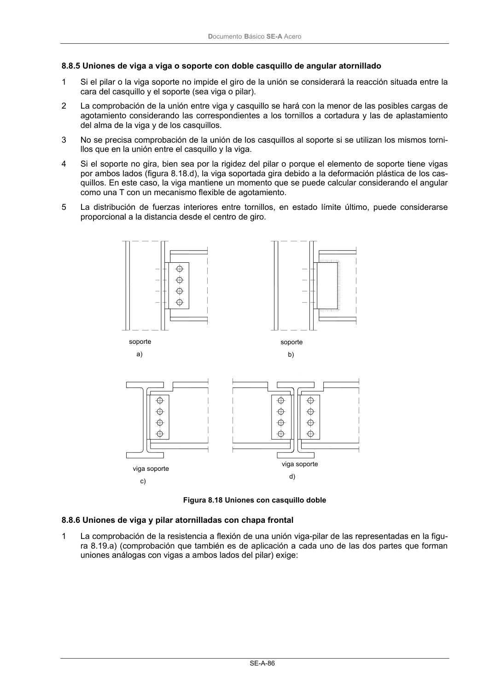

DB-SE-A Acero · edición 2007-10-23 · capa oficial
Documento DB-SE-A-oficial · SHA-256 del PDF 9ed9ea694aabfbda3bfbbef40dfe9223fde05d13c35bc2ba9751e5a96a22a64f
Página física 88 de 168.
Copia fiel del PDF fuente · Fuente oficial
Ficha de la disposición en la fuente oficial
Formato: Texto de la página (Markdown)
Documento Básico SE-A Acero
SE-A-86
8.8.5 Uniones de viga a viga o soporte con doble casquillo de angular atornillado
1
Si el pilar o la viga soporte no impide el giro de la unión se considerará la reacción situada entre la
cara del casquillo y el soporte (sea viga o pilar).
2
La comprobación de la unión entre viga y casquillo se hará con la menor de las posibles cargas de
agotamiento considerando las correspondientes a los tornillos a cortadura y las de aplastamiento
del alma de la viga y de los casquillos.
3
No se precisa comprobación de la unión de los casquillos al soporte si se utilizan los mismos torni-
llos que en la unión entre el casquillo y la viga.
4
Si el soporte no gira, bien sea por la rigidez del pilar o porque el elemento de soporte tiene vigas
por ambos lados (figura 8.18.d), la viga soportada gira debido a la deformación plástica de los cas-
quillos. En este caso, la viga mantiene un momento que se puede calcular considerando el angular
como una T con un mecanismo flexible de agotamiento.
5
La distribución de fuerzas interiores entre tornillos, en estado límite último, puede considerarse
proporcional a la distancia desde el centro de giro.
Figura 8.18 Uniones con casquillo doble
8.8.6 Uniones de viga y pilar atornilladas con chapa frontal
1
La comprobación de la resistencia a flexión de una unión viga-pilar de las representadas en la figu-
ra 8.19.a) (comprobación que también es de aplicación a cada uno de las dos partes que forman
uniones análogas con vigas a ambos lados del pilar) exige:
soporte
a)
soporte
b)
viga soporte
c)
viga soporte
d)
